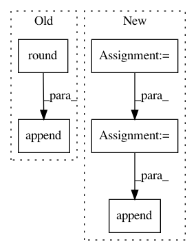

30dfa316d689a232c2e6deaa813827be52aba961,niftynet/network/simulator_gan.py,ImageGenerator,layer_op,#ImageGenerator#Any#Any#Any#Any#,35
Before Change
sz = [image_size[:-1]]
keep_prob_ph = 1 // not passed in as a placeholder
for i in range(4):
ch.append(round((ch[-1] + conditioning_channels * self.generator_shortcuts[i]) / 2))
sz = [[int(round(i / 2)) for i in sz[0]]] + sz
if spatial_rank == 3:
def resize_func(x, sz):
sz_x = x.get_shape().as_list()
After Change
keep_prob_ph = 1 // not passed in as a placeholder
add_noise = self.noise_channels_per_layer
if conditioning is not None:
conditioning_channels = conditioning.get_shape().as_list()[-1]
conditioning_channels = conditioning_channels + add_noise
else:
conditioning_channels = add_noise
// feature channels design pattern
ch = [512]
sz = [image_size[:-1]]
for i in range(4):
new_ch = ch[-1] + conditioning_channels * self.with_shortcuts[i]
new_ch = round(new_ch / 2)
ch.append(new_ch)
sz = [[int(round(i / 2)) for i in sz[0]]] + sz
// resizing utilities
spatial_rank = len(image_size) - 1
In pattern: SUPERPATTERN
Frequency: 3
Non-data size: 5
Instances
Project Name: NifTK/NiftyNet
Commit Name: 30dfa316d689a232c2e6deaa813827be52aba961
Time: 2017-09-12
Author: wenqi.li@ucl.ac.uk
File Name: niftynet/network/simulator_gan.py
Class Name: ImageGenerator
Method Name: layer_op
Project Name: caserec/CaseRecommender
Commit Name: cf1f601ab89d89ec72ba009140470d4689553db1
Time: 2018-02-16
Author: fortes.arthur@gmail.com
File Name: caserec/recommenders/item_recommendation/most_popular.py
Class Name: MostPopular
Method Name: predict
Project Name: interactiveaudiolab/nussl
Commit Name: b82419f321b3b52841065e00d1f50945d7e8a2ee
Time: 2020-03-16
Author: prem@u.northwestern.edu
File Name: nussl/separation/primitive/hpss.py
Class Name: HPSS
Method Name: run